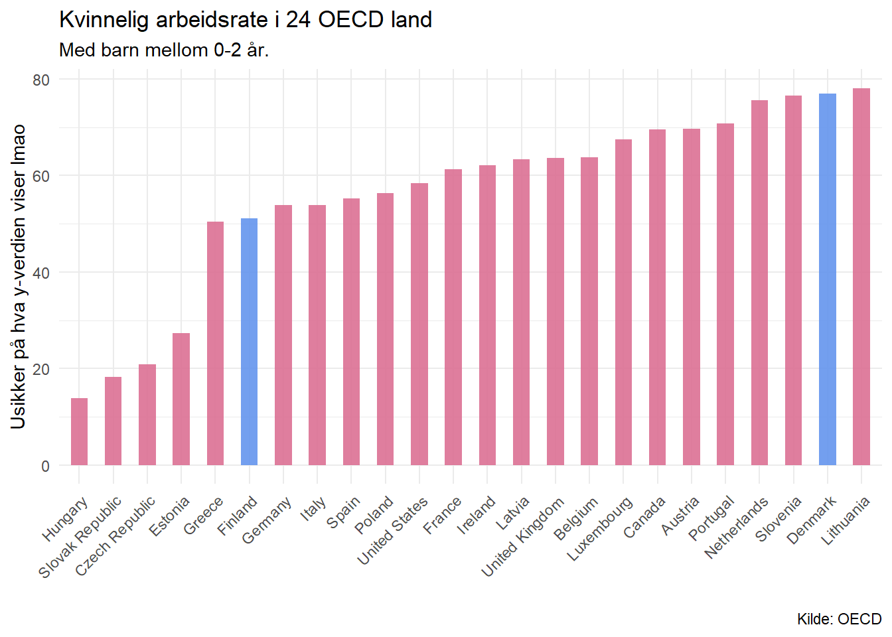
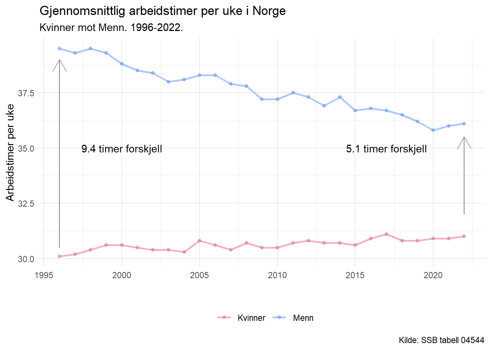
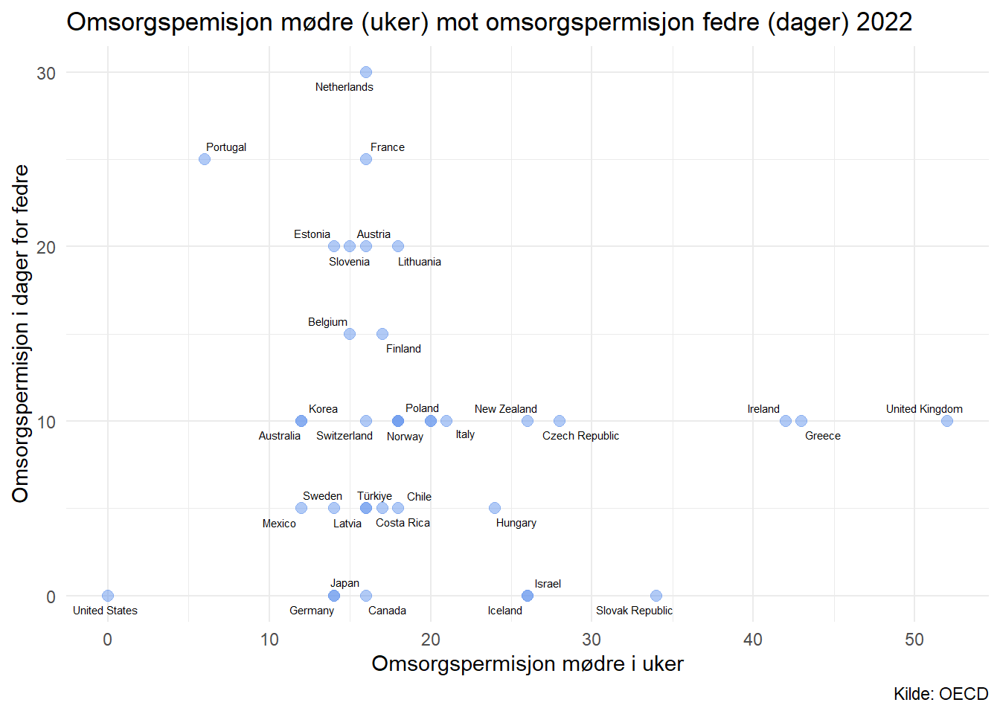
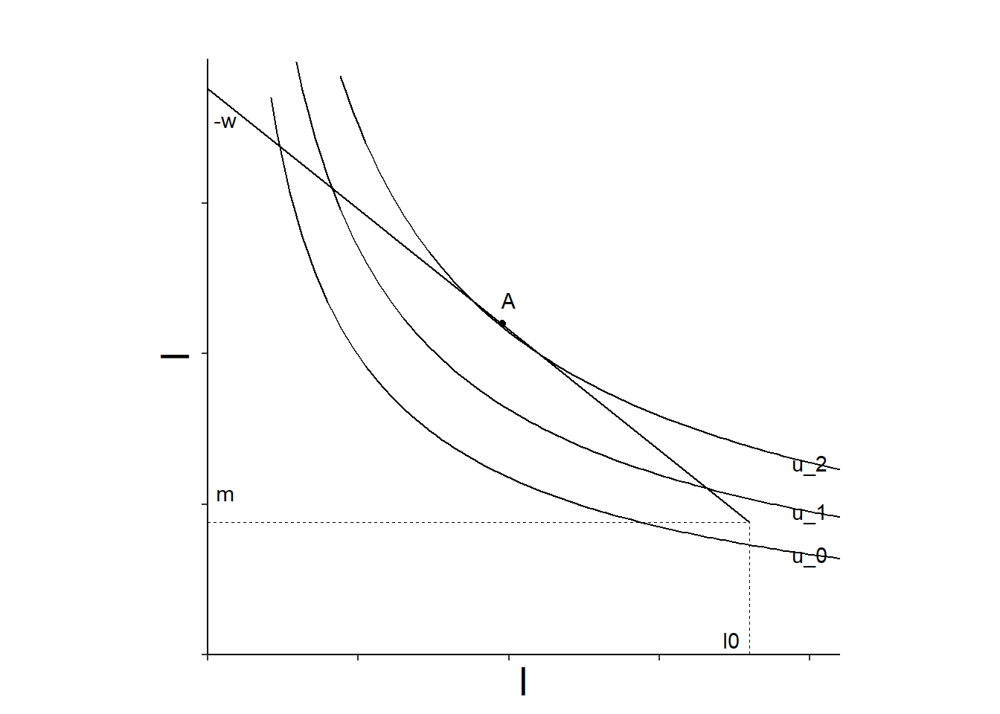
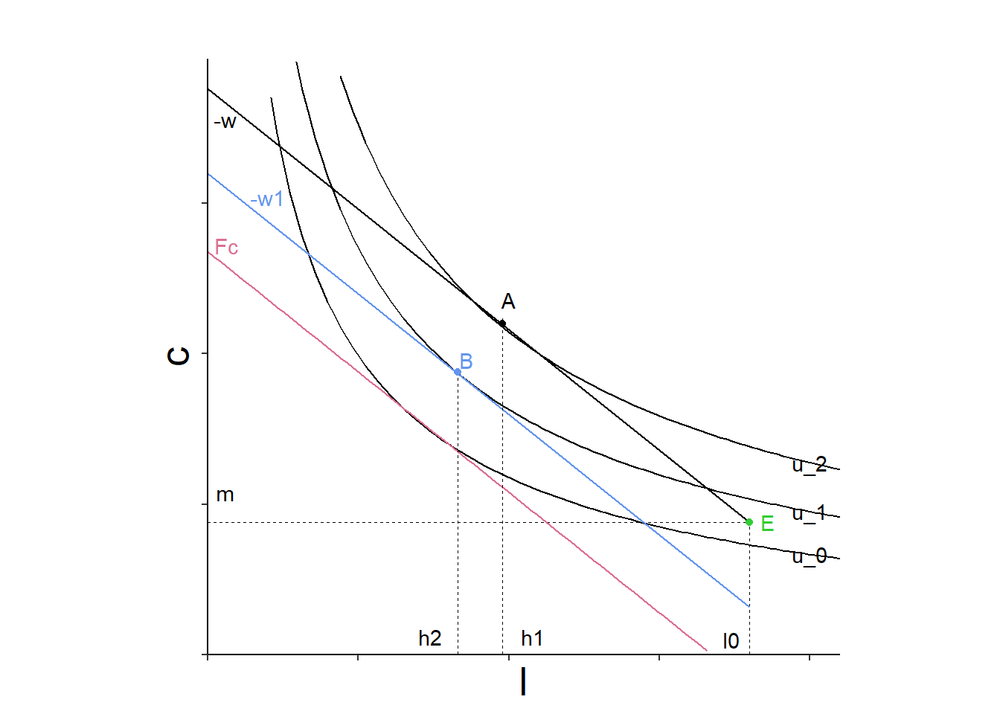
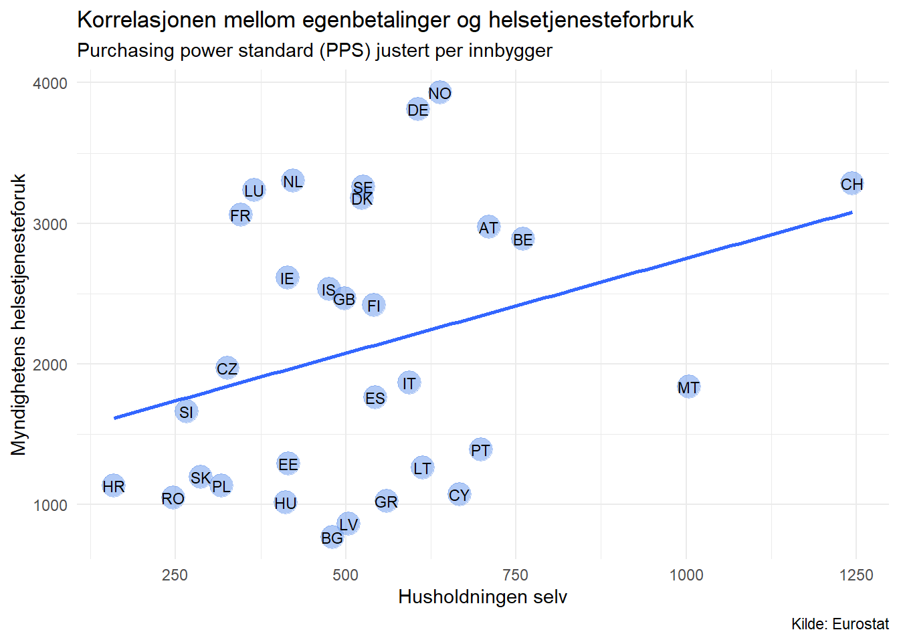
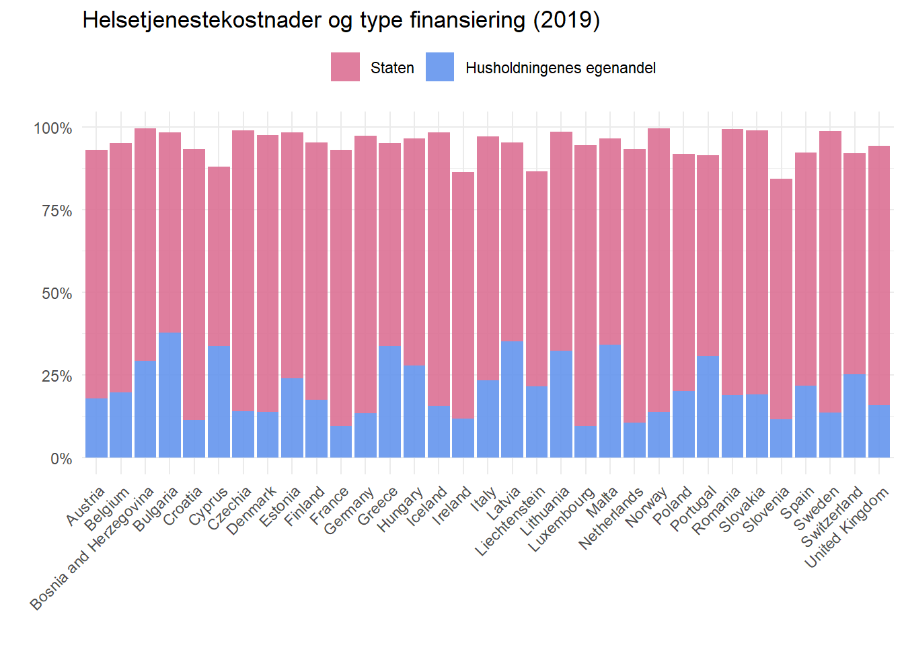
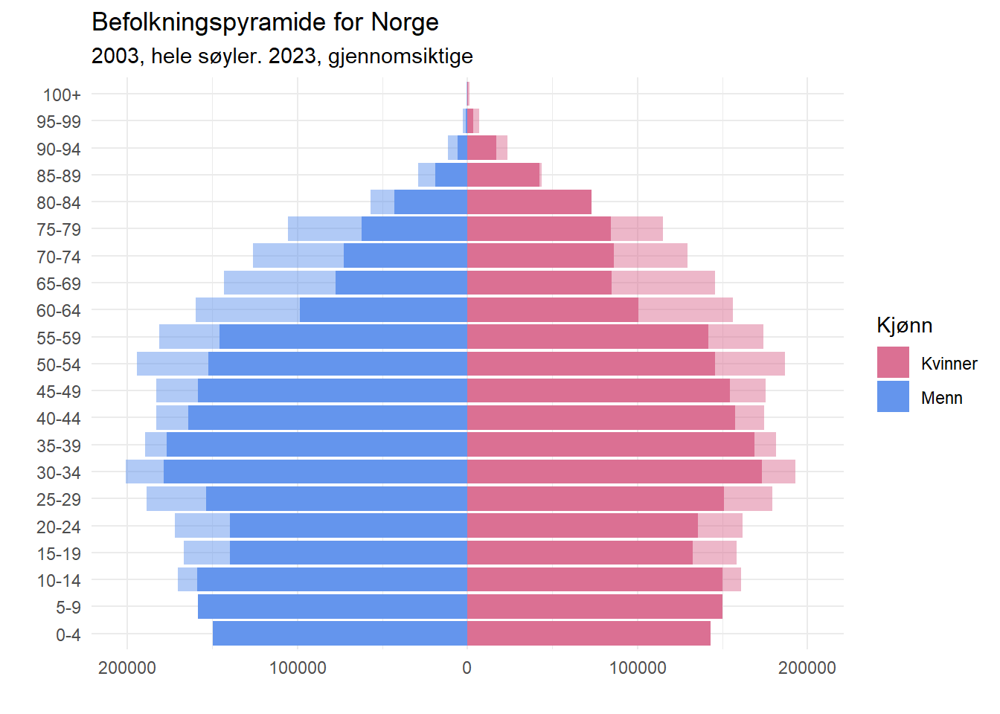
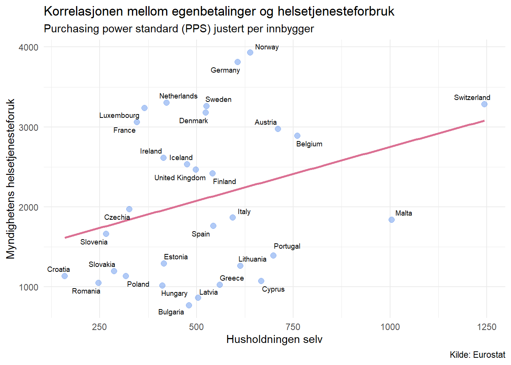

Gjennom det siste århundret har samfunnet vi lever i gått gjennom store forandringer for hvordan vi fungerer. Vi har gått fra et samfunn som for nøyaktig 100 år siden nettopp hadde opplevd den første store verdenskrigen, paripolitikk, deflasjonen og andre store endringer hvor fagforeninger blir etablert og man levde i et samfunn hvor kvinnens rolle var å være hjemme, mens mannen dro ut for å fiske eller jobbe i fabrikk et cetera. Det er også her den første delen av den nordiske modellen blir etablert som heter trepartssamarbeidet. Direkte forklart er dette samarbeidet mellom arbeidsgiver, arbeidstaker, fagforeninger og staten, hvor disse forhandler lønnsvilkår og eventuelt streik hvis de blir uenige.
Spol frem 100 år og etter vi etablerte organisert arbeidsliv (trepartssamarbeidet) har dette vært starten på et drastisk endret samfunn. Vi har laget oss en velferdsmodell som virker simpelt forklart som et tannhjul, og for at vi videre skal nyte velferden av at det fortsetter å gå rundt må vi som et samfunn gjøre det vi kan for at det ikke skal stikkes kjepper i tannhjulet. Før vi går videre er det greit å vite kort fortalt så lever den nordiske modellen vi har idag på grunn av at arbeidsstyrken (de i samfunnet vårt som arbeider) går på jobb, får en inntekt, og progressivt skattes for hvor stor inntekten er. Den andre inntekten som kommer inn til velferdsmodellen er via avgifter som vi pålegger samfunnet vi lever i, for eksempel siden det er en kostnad tilknyttet å kjøpe tobakk så legges det på en avgift som indirekte hjelper personen med helseutgifter ikke nå, men i fremtiden når han eksempelvis får lungekreft. Videre gjennom økonomisk styring bestemmer vi hvordan pengene skal fordeles gjennom subsidier til markedene som opplever størst svikt på grunn av at markedene selv ikke klarer finne likevekt, eller er lite hensiktsmessig å investere i et cetera. (Skriv bedre)
Utfordring 1.1 Familiepolitikk
Empiriske kjønnsforskjeller i valg av arbeidstimer for menn og kvinner
Familiepolitikken er viktig for fremtiden til den nordiske modellen, og de to viktigste punktene er hvordan vi som et samfunn skal klare å produsere nok barn, men samtidig klare passe på våre barn mens vi raskest mulig kommer tilbake ut i arbeidslivet.
I tabell 04544 ser vi forskjellen mellom en gjennomsnittlig arbeidsuke for kvinner og menn fra 1996 til 2022. Som figuren viser så har vi på denne tiden klart å redusere forskjellen mellom menn og kvinners arbeidsuke fra 9.4 timer i 1996, ned til kun 4.3 timers forskjell i 2022. Det man også kan tolke er at kvinners gjennomsnittlige arbeidsuker egentlig ikke har økt særlig mye på denne tiden, opp ca 1 time i gjennomsnitt, men at arbeidstiden til menn har gått betraktelig mer ned.

Som vi ser i denne figuren så har den kun en viktig variabel, vent, kun en viktig variabel, glem denne og la oss heller zoome inn på det som faktisk er viktig.

Mulige årsaker til endringen på disse 27 årene er gjennom subsidier til barnepass og subsidiert permisjon for å ta vare på barnet. Ved å se på figuren vil man kanskje intuitivt tenke at noe har skjedd på den mannlige siden av disse subsidiene siden det er her det er størst endring i gjennomsnittlig arbeidstimer per uke. Så før vi går gjennom den grafiske analysen skal vi kjapt se litt på hva som kan ha vært en grunn til dette. En kjapp titt på SSB sine sider forteller meg at 1. april 1993 ble det innført en fedrekvote i foreldrepermisjon som sa at totalt kunne fedre få\(\frac{42 uker} {210 dager} = 0.2 = 20 dager\) foreldrepermisjon ved 100 prosent dekningsgrad (Maria Engvik n.d.). Videre kan man også se at dette har blitt utvidet ytterligere i årene etter.
Ble nysgjerrig angående hvordan fedrekvoten så ut mot foreldrepermisjonen generelt i OECD land og ville lage en oppdatert figur for 2022.

Spania er fjernet da fedre har rett til like mye permisjon som mødre der, så foreldre-permisjonsretten endte opp med over 112 dager, som blir en ekstrem observasjon. Det man kan prøve å vise en sammenheng er at vi prøver å endre på ansvaret i hjemmet for både kvinner og menn hvor menn får mer ansvar ovenfor barnet. Noe som gir et mer egalitært delt ansvar av familieansvar i hjemmet. Det betyr også at kvinner får større muligheter i arbeidslivet, hvor de har muligheter å få mer opplæring og ansvar uten at arbeidsgiver skal frykte at kvinnen forsvinner lengre perioder eller permanent på grunn av barneomsorg. Helt mot origo kan man se Trym sitt favorittland, USA, som har null omsorgspermisjon for hverken kvinner eller menn.
Grafisk illustrert kan vi tenke oss at om begge foreldre må jobbe må de betale for barnepass, og om en forelder er hjemme trenger de ikke å betale siden den ene forelderen da har ansvaret som hjemmeværende. Vi antar at moren har hovedansvar for barnet eller flere barn. Dette kan vi sette opp som en Cobb-Douglas nyttefunksjon. Det vi skal se på her er hvordan en subsidie fra staten kan påvirke foreldrenes valg om å være hjemme med barnet eller dra på arbeid. Vi går ikke veldig dypt inn i matematikken her men ser mer på hvordan dette kan vises grafisk.
Som økonom er man glad i å forkorte ting så for å få en forståelse for hva som er på figurene så kommer en liten liste her:
\(h = timer\:på\:arbeid\)
\(c = konsum\)
\(w = budsjettlinjen\)
\(l = antall\:timer\:fritid\)
\(m = arbeidsfri\:inntekt\)
\(Fc = faste\:kostnader\)
For å få en forståelse for forklaringen til figurene er det greit å ha lest over hva de forskjellige variablene betyr. I figuren under kan man se et individs tre indifferens-kurver som er definert via tre forskjellige nyttenivåer for konsum og antall timer fritid. Vi antar at individet har en arbeidsfri inntekt - som vil si at om det kommer inn en inntekt som er definert ovenfor kalt \(m\) , dette kan man se i den stiplede linjen og er bare et helt tilfeldig tall.

Ser man på hvor \(m\) treffer budsjettlinjen har individet ikke nok inntekt for å kunne maksimere sin nytte av konsum og fritid og vil derfor velge å gå på arbeid for å kunne komme nærmere til optimale tilpasning som er definert i punkt \(A\).
Velger individet da å få barn uten å gå ut i arbeidet blir budsjettbetingelsen skjøvet nedover siden med barn kommer det med ekstra faste kostnader \(Fc\) og avstanden blir den kostnaden. Dette gjør at nytten \(u_0\) blir lavere en nytten hvis individet hadde vært hjemme, og blir kalt punkt \(E\) . Derfor velger dette individet å ikke arbeide. Men la oss se på hvis det blir innført en subsidie.
Med innføringen av en subsidie blir budsjettlinjen til individet \(-w_1\) og er den lyseblå budsjettlinjen i figuren. Det kan matematisk skrives \(Fc-s\) altså faste kostnader - subsidien og det optimale valget her blir \(B\) , og individet får høyere nytte av å gå ut å arbeide enn å være hjemme. Det man må huske på her er at jo lengre til venstre individet kommer på x-aksen så vil individet få mindre fritid, siden \(l\) er fritid. Det vi kan se er at før individet får barn i punkt \(A\) så får individet høyere nytte av å jobbe enn å være hjemme.

Avslutningsvis ser vi at arbeidstilbudet etter at individet fikk subsidiert barnepass er større fordi \(h_1 > h_2\) der individet blir å tilbringe mer tid på arbeid, dette kan virke ulogisk men om du tenker at venstre på x-aksen = >, så gir det mening.
Sammenhengen mellom lengde på betalt foreldrepermisjon og yrkesdeltakelse blant kvinner
Bruk datasettet til å lage to diagrammer som viser sammenhengen mellom lengde på betalt foreldrepermisjon og yrkesdeltakelse blant kvinner. I det ene diagrammet skal du bruke data som beskriver sysselsetting blant kvinner med barn i alderen 0-2 år (fem_emp_rate_0_2), og det andre skal du bruke data på kvinner med barn i alderen 6-14 år (fem_emp_rate_6_14).
Diskuter, basert på disse diagrammene og økonomisk teori, følgende påstand: «Gunstige permisjonsordninger ved fødsel sikrer høy yrkesdeltakelse blant kvinner på lang sikt»


Hvorfor høy yrkesdeltakelse blant norske kvinner og høye barnetall er viktig for den nordiske modellen
For at den nordiske modellen skal kunne fortsette trenger vi høy yrkesdeltakelse blant kvinner slik at vi fortsetter å få inn skattbar inntekt som hovedsakelig brukes til å finansiere alle godene som vi får tilbake av den. For eksempel pensjon, trygd når man havner utenfor arbeidsstyrken, subsidiert utdanning, eldreomsorg, og subsidierte helsetjenester for å nevne noen eksempler.
Barnetall er også veldig viktig for den nordiske modellen, for om vi får en skjevhet i befolknings-pyramiden hvor vi får et flertall av eldre mennesker i Norge enn nyfødte barn og mennesker i arbeidsstyrken så vil samfunnet slite med å finansiere godene som modellen gir oss. Hvis antall fødsler per 2 voksne er mindre enn 2 vil befolkningen på sikt minke.
Som man kan se i befolkningspyramiden under så er det flere eldre mennesker i 2023 enn det var for 20 år siden i Norge.

Utfordring 1.2
Sammenhengen mellom andelen av egenbetalinger og helsetjenesteforbruk pr. innbygger

Hvordan økt egenbetaling påvirker helsetjenesteforbruk og øker effektiviteten
---title: "Utfordring 1.1 og 1.2"subtitle: "Fakultet for biovitenskap, fiskeri og økonomi."date: last-modifieddate-format: "DD-MM-YYYY"author: "Kandidatnummer 13, SOK-2008, Høst 2023"format: htmlecho: falsetoc: truetoc-title: "Innholdsliste"code-tools: truewarning: falsebibliography: referanse.bibnocite: - tito - barr---```{r}#| output: false# Loading packages neededrm(list =ls())library(tidyverse)library(rjstat)library(httr)library(readr)library(eurostat)library(countrycode) # not really needed but keeping for future referenceoptions(scipen =999)library(ggrepel)library(openxlsx)``````{r}# Importing data, this code is used to download tables from SSB and is based on the lectures of our teacher from last year in SOK-1004, Even S. Hvinden.url <-"https://data.ssb.no/api/v0/no/table/04544/"query <-'{ "query": [ { "code": "Kjonn", "selection": { "filter": "item", "values": [ "1", "2" ] } }, { "code": "Yrkesstatus", "selection": { "filter": "item", "values": [ "00" ] } } ], "response": { "format": "json-stat2" }}'hent_indeks.tmp <- url %>%POST(body = query, encode ="json")df_1 <- hent_indeks.tmp %>%content("text") %>%fromJSONstat() %>%as_tibble()``````{r}# Data for population pyramidurl <-"https://data.ssb.no/api/v0/no/table/07459/"query <-'{ "query": [ { "code": "Region", "selection": { "filter": "vs:Landet", "values": [ "0" ] } }, { "code": "Kjonn", "selection": { "filter": "item", "values": [ "1", "2" ] } }, { "code": "Alder", "selection": { "filter": "agg:FemAarigGruppering", "values": [ "F00-04", "F05-09", "F10-14", "F15-19", "F20-24", "F25-29", "F30-34", "F35-39", "F40-44", "F45-49", "F50-54", "F55-59", "F60-64", "F65-69", "F70-74", "F75-79", "F80-84", "F85-89", "F90-94", "F95-99", "F100G5+" ] } }, { "code": "Tid", "selection": { "filter": "item", "values": [ "2003", "2023" ] } } ], "response": { "format": "json-stat2" }}'hent_indeks.tmp <- url %>%POST(body = query, encode ="json")df_pop <- hent_indeks.tmp %>%content("text") %>%fromJSONstat() %>%as_tibble()``````{r}# Importing the data for women based on generosity of parental leave and womens employment ratio in 24 OECD (Organization for Economic Cooperation and Development) countrieswomen <-read_delim("https://raw.githubusercontent.com/uit-sok-2008-h23/uit-sok-2008-h23.github.io/main/assets/women.csv", delim =";", escape_double =FALSE, trim_ws =TRUE)# Using the package eurostat to download the data needed# Code used from the eurostat package description siteeurostat <-get_eurostat(id ="hlth_sha11_hf", type ="label")# Removing a list, query and the url to free up memory since it is not needed anymorerm(hent_indeks.tmp, query, url)``````{r}# Small datamanipulation with dplyr, pivoting some values for plotting purpose, changing some names and making the year column numeric# The arrange makes so the output of the data will go ascending from the first observation of yeardf_plot<-df_1 %>%pivot_wider(names_from = statistikkvariabel, values_from = value) %>%rename(arbeidstid_pr_uke ='Faktisk arbeidstid (timer per uke)') %>%transmute(year =as.numeric(år), sex = kjønn, arbeidstid_pr_uke) %>%arrange(year)```# InnledningGjennom det siste århundret har samfunnet vi lever i gått gjennom store forandringer for hvordan vi fungerer. Vi har gått fra et samfunn som for nøyaktig 100 år siden nettopp hadde opplevd den første store verdenskrigen, paripolitikk, deflasjonen og andre store endringer hvor fagforeninger blir etablert og man levde i et samfunn hvor kvinnens rolle var å være hjemme, mens mannen dro ut for å fiske eller jobbe i fabrikk et cetera. Det er også her den første delen av den nordiske modellen blir etablert som heter trepartssamarbeidet. Direkte forklart er dette samarbeidet mellom arbeidsgiver, arbeidstaker, fagforeninger og staten, hvor disse forhandler lønnsvilkår og eventuelt streik hvis de blir uenige.Spol frem 100 år og etter vi etablerte organisert arbeidsliv (trepartssamarbeidet) har dette vært starten på et drastisk endret samfunn. Vi har laget oss en velferdsmodell som virker simpelt forklart som et tannhjul, og for at vi videre skal nyte velferden av at det fortsetter å gå rundt må vi som et samfunn gjøre det vi kan for at det ikke skal stikkes kjepper i tannhjulet. Før vi går videre er det greit å vite kort fortalt så lever den nordiske modellen vi har idag på grunn av at arbeidsstyrken (de i samfunnet vårt som arbeider) går på jobb, får en inntekt, og progressivt skattes for hvor stor inntekten er. Den andre inntekten som kommer inn til velferdsmodellen er via avgifter som vi pålegger samfunnet vi lever i, for eksempel siden det er en kostnad tilknyttet å kjøpe tobakk så legges det på en avgift som indirekte hjelper personen med helseutgifter ikke nå, men i fremtiden når han eksempelvis får lungekreft. Videre gjennom økonomisk styring bestemmer vi hvordan pengene skal fordeles gjennom subsidier til markedene som opplever størst svikt på grunn av at markedene selv ikke klarer finne likevekt, eller er lite hensiktsmessig å investere i et cetera. (Skriv bedre)# Utfordring 1.1 Familiepolitikk## Empiriske kjønnsforskjeller i valg av arbeidstimer for menn og kvinnerFamiliepolitikken er viktig for fremtiden til den nordiske modellen, og de to viktigste punktene er hvordan vi som et samfunn skal klare å produsere nok barn, men samtidig klare passe på våre barn mens vi raskest mulig kommer tilbake ut i arbeidslivet.I tabell 04544 ser vi forskjellen mellom en gjennomsnittlig arbeidsuke for kvinner og menn fra 1996 til 2022. Som figuren viser så har vi på denne tiden klart å redusere forskjellen mellom menn og kvinners arbeidsuke fra 9.4 timer i 1996, ned til kun 4.3 timers forskjell i 2022. Det man også kan tolke er at kvinners gjennomsnittlige arbeidsuker egentlig ikke har økt særlig mye på denne tiden, opp ca 1 time i gjennomsnitt, men at arbeidstiden til menn har gått betraktelig mer ned.```{r}colours <-c("Kvinner"="palevioletred", "Menn"="cornflowerblue")# Dont mind this figure its just for showing that the other data is uselessdf_1 %>%ggplot(aes(x=as.numeric(år), y=value, color=kjønn))+geom_line(linewidth=1.1)+facet_wrap(~statistikkvariabel, scales ="free")+theme_minimal()+theme(legend.position ="bottom")+labs(x="", y="", color="")+scale_colour_manual(values = colours)```Som vi ser i denne figuren så har den kun en viktig variabel, vent, kun en viktig variabel, glem denne og la oss heller zoome inn på det som faktisk er viktig.```{r}# Saving some colors to use for the plotcolours <-c("Kvinner"="palevioletred", "Menn"="cornflowerblue")# Making a plot to show the arithmetic mean of women vs men working weekly in Norway.df_plot %>%ggplot(aes(x=year, y=arbeidstid_pr_uke, color=sex))+geom_line(linewidth=1, alpha=0.5)+geom_point(alpha=0.5)+theme_minimal()+theme(legend.position ="bottom")+labs(title="Gjennomsnittlig arbeidstimer per uke i Norge", subtitle="Kvinner mot Menn. 1996-2022.", y="Arbeidstimer per uke", x="", caption ="Kilde: SSB tabell 04544",color="" )+scale_colour_manual(values = colours)+annotate("text", x =2000, y =35, label ="9.4 timer forskjell")+annotate("text", x =2017, y =35, label ="5.1 timer forskjell")+geom_segment(aes(x=1996, y=30.5, xend=1996, yend=39, color="black"),show.legend =FALSE, arrow =arrow(length=unit(.5, 'cm')))+geom_segment(aes(x=2022, y=32, xend=2022, yend=35.5, color="black"),show.legend =FALSE, arrow =arrow(length=unit(.5, 'cm')))```Mulige årsaker til endringen på disse 27 årene er gjennom subsidier til barnepass og subsidiert permisjon for å ta vare på barnet. Ved å se på figuren vil man kanskje intuitivt tenke at noe har skjedd på den mannlige siden av disse subsidiene siden det er her det er størst endring i gjennomsnittlig arbeidstimer per uke. Så før vi går gjennom den grafiske analysen skal vi kjapt se litt på hva som kan ha vært en grunn til dette. En kjapp titt på SSB sine sider forteller meg at 1. april 1993 ble det innført en fedrekvote i foreldrepermisjon som sa at totalt kunne fedre få$\frac{42 uker} {210 dager} = 0.2 = 20 dager$ foreldrepermisjon ved 100 prosent dekningsgrad [@ssbdekning]. Videre kan man også se at dette har blitt utvidet ytterligere i årene etter.Ble nysgjerrig angående hvordan fedrekvoten så ut mot foreldrepermisjonen generelt i OECD land og ville lage en oppdatert figur for 2022.```{r}# I got curious so I had to look at maternity and paternity leave for 2022url <-"https://www.oecd.org/els/family/PF2_5_Trends_in_leave_entitlements_around_childbirth.xlsx"# Downloading the excel spreadsheet from OECD and starting from sheet 4 that has data# slicing to remove useless rows, then removing some na values and renamingdf_maternity <- url %>%read.xlsx(sheet=4, startRow =1) %>%as_tibble() %>%slice(-2) %>%na.omit() %>%rename(country = X1, year = X2, maternity_weeks = Maternity_weeks, pat_leave = Patleave) %>%mutate(year =as.integer(year))# Just slicing the data manip up a bit so both me and dplyr can have a break piping# Now I want to select the data I want to look atdf_maternity<-df_maternity %>%select(maternity_weeks, pat_leave, country, year) %>%filter(year =="2022")# I was getting lazy here and made ChatGPT help me with an issue with integers# so I made it write this for me df_maternity$maternity_weeks <-gsub(",", ".", df_maternity$maternity_weeks)df_maternity$pat_leave <-gsub(",", ".", df_maternity$pat_leave)# Note this takes some values and rounds them to the number # they are and not to the closest round number # so there will be some "incorrect" values also I multiply # pat_leave by 5 to get it to days instead of weeks# interestingly I had to remove spain because they have added half on half maternity# leave for both parents so it became an outlier when presented in days for paternitydf_maternity <-df_maternity %>%mutate(maternity_weeks =as.integer(maternity_weeks), pat_leave =as.integer(pat_leave), pat_leave = pat_leave *5)``````{r}# Plotting the paternity(days) vs maternity leave (weeks)df_maternity%>%filter(country !="Spain") %>%ggplot(aes(x=maternity_weeks, y=pat_leave,label=country))+geom_point(size=2.5, alpha=0.5, color="cornflowerblue")+labs(x="Omsorgspermisjon mødre i uker", y="Omsorgspermisjon i dager for fedre", title="Omsorgspemisjon mødre (uker) mot omsorgspermisjon fedre (dager) 2022",caption="Kilde: OECD")+theme_minimal()+geom_text_repel(size=2)```Spania er fjernet da fedre har rett til like mye permisjon som mødre der, så foreldre-permisjonsretten endte opp med over 112 dager, som blir en ekstrem observasjon. Det man kan prøve å vise en sammenheng er at vi prøver å endre på ansvaret i hjemmet for både kvinner og menn hvor menn får mer ansvar ovenfor barnet. Noe som gir et mer egalitært delt ansvar av familieansvar i hjemmet. Det betyr også at kvinner får større muligheter i arbeidslivet, hvor de har muligheter å få mer opplæring og ansvar uten at arbeidsgiver skal frykte at kvinnen forsvinner lengre perioder eller permanent på grunn av barneomsorg. Helt mot origo kan man se Trym sitt favorittland, USA, som har null omsorgspermisjon for hverken kvinner eller menn.Grafisk illustrert kan vi tenke oss at om begge foreldre må jobbe må de betale for barnepass, og om en forelder er hjemme trenger de ikke å betale siden den ene forelderen da har ansvaret som hjemmeværende. Vi antar at moren har hovedansvar for barnet eller flere barn. Dette kan vi sette opp som en Cobb-Douglas nyttefunksjon. Det vi skal se på her er hvordan en subsidie fra staten kan påvirke foreldrenes valg om å være hjemme med barnet eller dra på arbeid. Vi går ikke veldig dypt inn i matematikken her men ser mer på hvordan dette kan vises grafisk.Som økonom er man glad i å forkorte ting så for å få en forståelse for hva som er på figurene så kommer en liten liste her:- $h = timer\:på\:arbeid$- $c = konsum$- $w = budsjettlinjen$- $l = antall\:timer\:fritid$- $m = arbeidsfri\:inntekt$- $Fc = faste\:kostnader$For å få en forståelse for forklaringen til figurene er det greit å ha lest over hva de forskjellige variablene betyr. I figuren under kan man se et individs tre indifferens-kurver som er definert via tre forskjellige nyttenivåer for konsum og antall timer fritid. Vi antar at individet har en arbeidsfri inntekt - som vil si at om det kommer inn en inntekt som er definert ovenfor kalt $m$ , dette kan man se i den stiplede linjen og er bare et helt tilfeldig tall.```{r}# NB this code is taken from mappeoppgave 2 in SOK-1004 last year# A lot of this code is written by D. J. Clark and modifications is made by me# to illustrate a subsidy of child carex <-seq(0, 4000, by =1)df <-data.frame(x)# Defining some indifference curvesu_0 <-function(x) (4000^(5/3))/x^(2/3)+2000u_1 <-function(x) (4741^(5/3))/x^(2/3)+2000u_2 <-function(x) (5500^(5/3))/x^(2/3)+2000# Defining plot settingsplot_settings <-theme(axis.title =element_text(size =20),plot.title =element_text(size =20),panel.background =element_blank(),axis.line =element_line(colour ="black"),axis.text.y=element_blank(),axis.text.x=element_blank(),legend.position ="none")bud_0 <-function(x) 8500-0.8*x+3400figur_1 <-ggplot(df, aes(x)) +geom_segment(aes(x =0, y =bud_0(0), xend =9000, yend =bud_0(9000)),color ="black") +annotate("text",x=300,y=11400, label="-w")+annotate("text",x=300,y=5200, label="m", color="black")+geom_segment(aes(x=0,xend=9000,y=4700,yend=4700), linewidth=0.1, linetype="dashed", color="black")+geom_segment(aes(x=9000,xend=9000,y=2500,yend=4700), linewidth=0.1, linetype="dashed", color="black")+annotate("text", x=5000, y=8400, color="black", label="A")+geom_point(x=4900, y=8000, color="black")+annotate("text", x=8700, y=2750, color="black", label="l0")+labs(title="", x="l", y="c") + plot_settings +coord_fixed(ratio =1) +scale_x_continuous(limits =c(0, 10500), expand =c(0, 0)) +scale_y_continuous(limits =c(2500, 12400), expand =c(0, 0))for (func_name inc("u_0", "u_1", "u_2")) { func <-get(func_name) figur_1 <- figur_1 +stat_function(fun = func, aes()) +annotate("text", x =10000, y =func(10000), label = func_name)}figur_1```Ser man på hvor $m$ treffer budsjettlinjen har individet ikke nok inntekt for å kunne maksimere sin nytte av konsum og fritid og vil derfor velge å gå på arbeid for å kunne komme nærmere til optimale tilpasning som er definert i punkt $A$.Velger individet da å få barn uten å gå ut i arbeidet blir budsjettbetingelsen skjøvet nedover siden med barn kommer det med ekstra faste kostnader $Fc$ og avstanden blir den kostnaden. Dette gjør at nytten $u_0$ blir lavere en nytten hvis individet hadde vært hjemme, og blir kalt punkt $E$ . Derfor velger dette individet å ikke arbeide. Men la oss se på hvis det blir innført en subsidie.```{r}bud_2 <-function(x) 8500-0.8*x+700figur_2 <- figur_1+stat_function(df,fun=bud_2, mapping =aes(), color="palevioletred")+annotate("text", x=320, y=9300, color="palevioletred", label="Fc")figur_2```Med innføringen av en subsidie blir budsjettlinjen til individet $-w_1$ og er den lyseblå budsjettlinjen i figuren. Det kan matematisk skrives $Fc-s$ altså faste kostnader - subsidien og det optimale valget her blir $B$ , og individet får høyere nytte av å gå ut å arbeide enn å være hjemme. Det man må huske på her er at jo lengre til venstre individet kommer på x-aksen så vil individet få mindre fritid, siden $l$ er fritid. Det vi kan se er at før individet får barn i punkt $A$ så får individet høyere nytte av å jobbe enn å være hjemme.```{r}# Defining budget line, againbud_1 <-function(x) 8500-0.8*x+2000figur_3 <- figur_2+geom_segment(aes(x =0, y =bud_1(0), xend =9000, yend =bud_1(9000)),color ="cornflowerblue") +annotate("text",x=1000,y=10100, label="-w1", color="cornflowerblue")+geom_point(x=4150, y=7200, color="cornflowerblue")+annotate("text", x=4300, y=7400, color="cornflowerblue", label="B")+annotate("text", x=9300, y=4700, color="limegreen", label="E")+geom_point(x=9000, y=4700, color="limegreen")+geom_segment(aes(x=4150,xend=4150,y=2500,yend=7150), linewidth=0.1, linetype="dashed", color="black")+geom_segment(aes(x=4900,xend=4900,y=2500,yend=8100), linewidth=0.1, linetype="dashed", color="black")+annotate("text", x=5400, y=2800, label="h1")+annotate("text", x=3700, y=2800, label="h2")figur_3```Avslutningsvis ser vi at arbeidstilbudet etter at individet fikk subsidiert barnepass er større fordi $h_1 > h_2$ der individet blir å tilbringe mer tid på arbeid, dette kan virke ulogisk men om du tenker at venstre på x-aksen = \>, så gir det mening.## Sammenhengen mellom lengde på betalt foreldrepermisjon og yrkesdeltakelse blant kvinnerBruk datasettet til å lage to diagrammer som viser sammenhengen mellom lengde på betalt foreldrepermisjon og yrkesdeltakelse blant kvinner. I det ene diagrammet skal du bruke data som beskriver sysselsetting blant kvinner med barn i alderen 0-2 år (fem_emp_rate_0_2), og det andre skal du bruke data på kvinner med barn i alderen 6-14 år (fem_emp_rate_6_14).Diskuter, basert på disse diagrammene og økonomisk teori, følgende påstand: «Gunstige permisjonsordninger ved fødsel sikrer høy yrkesdeltakelse blant kvinner på lang sikt»```{r}colours_country <-c("palevioletred", "palevioletred","palevioletred", "palevioletred","cornflowerblue", "palevioletred","cornflowerblue", "palevioletred","palevioletred", "palevioletred","palevioletred", "palevioletred","palevioletred", "palevioletred","palevioletred", "palevioletred","palevioletred", "palevioletred","palevioletred", "palevioletred","palevioletred", "palevioletred","palevioletred", "palevioletred")# Create a named vector for colorscolours_country_named <-setNames(colours_country, (women$country))# Making a plot to show the employment rate of women with children 0-2women %>%ggplot(aes(x =reorder(country, +fem_emp_rate_0_2), y=fem_emp_rate_0_2))+geom_col(aes(fill=country), alpha=0.9, width =0.5)+theme_minimal()+theme(legend.position ="none")+labs(title="Kvinnelig arbeidsrate i 24 OECD land", subtitle="Med barn mellom 0-2 år.", y="Usikker på hva y-verdien viser lmao", x="", caption ="Kilde: OECD",color="" )+scale_x_discrete(guide =guide_axis(angle=45))+scale_fill_manual(values = colours_country_named)``````{r}# Making a plot to show the employment rate of women with children 6-14women %>%ggplot(aes(x =reorder(country, +fem_emp_rate_6_14), y=fem_emp_rate_6_14))+geom_col(aes(fill=country), alpha=0.9, width =0.5)+theme_minimal()+theme(legend.position ="none")+labs(title="Kvinnelig arbeidsrate i 24 OECD land", subtitle="Med barn mellom 6-14 år.", y="Usikker på hva y-verdien viser lmao", x="", caption ="Kilde: OECD",color="" )+scale_x_discrete(guide =guide_axis(angle=45))+scale_fill_manual(values = colours_country_named)```## Hvorfor høy yrkesdeltakelse blant norske kvinner og høye barnetall er viktig for den nordiske modellenFor at den nordiske modellen skal kunne fortsette trenger vi høy yrkesdeltakelse blant kvinner slik at vi fortsetter å få inn skattbar inntekt som hovedsakelig brukes til å finansiere alle godene som vi får tilbake av den. For eksempel pensjon, trygd når man havner utenfor arbeidsstyrken, subsidiert utdanning, eldreomsorg, og subsidierte helsetjenester for å nevne noen eksempler.Barnetall er også veldig viktig for den nordiske modellen, for om vi får en skjevhet i befolknings-pyramiden hvor vi får et flertall av eldre mennesker i Norge enn nyfødte barn og mennesker i arbeidsstyrken så vil samfunnet slite med å finansiere godene som modellen gir oss. Hvis antall fødsler per 2 voksne er mindre enn 2 vil befolkningen på sikt minke.Som man kan se i befolkningspyramiden under så er det flere eldre mennesker i 2023 enn det var for 20 år siden i Norge.```{r}# Fixing just a big K on Kjønndf_pop<-df_pop %>%rename(Kjønn = kjønn)# Fixing so it is possible to arrange the age groups correctly df_pop$alder <-gsub("år", "", df_pop$alder)df_pop$alder <-gsub("100 år eller eldre", "100+", df_pop$alder)df_pop$alder <-gsub(" ", "", df_pop$alder)df_pop$alder <-gsub("100ellereldre", "100+", df_pop$alder)# Forced ChatGPT to write this for meage_levels <-c("0-4", "5-9", "10-14", "15-19", "20-24", "25-29", "30-34", "35-39", "40-44", "45-49", "50-54", "55-59", "60-64", "65-69", "70-74", "75-79", "80-84", "85-89", "90-94", "95-99", "100+")# This code makes the alder col a factor and replaces alder with age_levels abovedf_pop$alder <-factor(df_pop$alder, levels = age_levels)# Code inspired by this blog post: https://www.r-bloggers.com/2023/09/creating-population-pyramid-plots-in-r-with-ggplot2/pyramide_2003 <- df_pop %>%filter(år ==2003) %>%ggplot(aes(x=alder, fill=Kjønn,y =ifelse(test = Kjønn =="Menn",yes =-value,no = value ) )) +geom_bar(stat="identity") +scale_fill_manual(values = colours)# I improved upon this and made ChatGPT rewrite it to add 2023 since I had no# clue at all how to do it myselfpop_pyramide <- pyramide_2003 +geom_bar(data=filter(df_pop, år ==2023),aes(y =ifelse(test = Kjønn =="Menn",yes =-value,no = value ), fill=Kjønn),stat="identity", alpha=0.5) +scale_y_continuous(labels = abs,limits =max(df_pop$value) *c(-1,1) ) +coord_flip() +theme_minimal() +labs(x="", y="", title="Befolkningspyramide for Norge", subtitle="2003, hele søyler. 2023, gjennomsiktige")pop_pyramide```# Utfordring 1.2## Sammenhengen mellom andelen av egenbetalinger og helsetjenesteforbruk pr. innbygger```{r}# Small fix for variable names and fixing date.time objecteurostat <- eurostat %>%transmute(date =as.Date(time),unit = unit,spending = icha11_hf, country = geo, val = values)``````{r}# Filtering for 2019 and aggregated values then pivoting it wide# renaming two variables afterwards in euro_wideeuro_wide <- eurostat %>%filter(date =="2019-01-01", !country %in%c('European Union - 27 countries (from 2020)','European Union - 28 countries (2013-2020)','European Union - 27 countries (2007-2013)','European Union - 15 countries (1995-2004)','Euro area – 20 countries (from 2023)','Euro area - 19 countries (2015-2022)','Euro area - 18 countries (2014)','Euro area - 12 countries (2001-2006)')) %>%pivot_wider(names_from ="spending", values_from ="val") %>%rename(house ='Household out-of-pocket payment', gov ='Government schemes and compulsory contributory health care financing schemes') %>%# This code I had to read the countrycode instructions to understand# how to abbreviate the country names, then decided to not use it in any way# but want to keep it incase of future usemutate(abbrev =countrycode(sourcevar = country, destination ="iso2c",origin ="country.name"))``````{r}#| output: false#| # Looking for correlation with a linear regression modellm( gov ~ house, euro_wide)``````{r}# Plotting the correlation and the linear regression modeleuro_wide%>%filter(unit =='Purchasing power standard (PPS) per inhabitant') %>%ggplot(aes(x=house, y=gov,label=country))+geom_point(size=2.5, alpha=0.5, color="cornflowerblue")+geom_smooth(method = lm, se=FALSE, colour="palevioletred")+labs(x="Husholdningen selv", y="Myndighetens helsetjenesteforuk", title="Korrelasjonen mellom egenbetalinger og helsetjenesteforbruk",caption="Kilde: Eurostat", subtitle="Purchasing power standard (PPS) justert per innbygger")+theme_minimal()+geom_text_repel(size=2.5)```## Hvordan økt egenbetaling påvirker helsetjenesteforbruk og øker effektiviteten```{r}# Adding the colours I want colours <-c('Government schemes and compulsory contributory health care financing schemes'="palevioletred", 'Household out-of-pocket payment'="cornflowerblue")# This figure needed alot of filtering to work, mostly just saying to look at 2019# and remove some observations in country that was aggregated and not needed# also had to filter for types of spending I wanted to look at# and finally I wanted to look at percentages of spending from gov and households# rest is just some small finetuning to make it look bettereurostat %>%filter(date =="2019-01-01", !country %in%c('European Union - 27 countries (from 2020)','European Union - 28 countries (2013-2020)','European Union - 27 countries (2007-2013)','European Union - 15 countries (1995-2004)','Euro area – 20 countries (from 2023)','Euro area - 19 countries (2015-2022)','Euro area - 18 countries (2014)','Euro area - 12 countries (2001-2006)'), spending %in%c('Government schemes and compulsory contributory health care financing schemes', 'Household out-of-pocket payment'), unit =='Percentual share of total current health expenditure (CHE)') %>%ggplot(aes(x=country, y=val, fill=spending)) +theme_minimal()+geom_col(alpha=0.9) +theme(legend.position ="top") +scale_x_discrete(guide =guide_axis(angle=45))+labs(title="Helsetjenestekostnader og type finansiering (2019)", y="", x="")+scale_fill_manual(values = colours, labels=c('Staten', 'Husholdningenes egenandel'),name="" )+scale_y_continuous(labels = scales::percent_format(scale =1))```## Fordelingseffekter av økte egenandeler# Appendix[ChatGPT forespørsel om endring av farger til søyler](https://chat.openai.com/share/37e54a43-9162-4396-a50c-90e3a005110b) (Endte opp med å bruke colours_country_named \<- setNames(colours_country, sort(unique(women\$country))) )[ChatGPT forespørsel om hjelp til å huske ! for å eksludere ting](https://chat.openai.com/share/2df38c59-8cae-4de7-89d3-73ecdc385db9) (Endte opp med å bruke koden med !)[Hjelp til befolkningspyramide](https://chat.openai.com/share/7aadd5cd-290a-4c62-a34f-3082adfcc2c6) (Endte opp med å bruke mye av koden hvor jeg nevner i kodeblokk at ChatGPT hjelper meg)[ChatGPT hjalp med å finne ut å bruke ggrepel for bedre plassering av labels](https://chat.openai.com/c/322b78da-a14d-4f8b-bea1-ba1e1adf4bd5) (Endte opp med å bruke pakken og endre funksjonen til geom_text_repel() heller)[ChatGPT hjalp med problem med character variabler](https://chat.openai.com/share/def3406c-22cc-4c2b-80a0-b51df59ed7e2) (Endte opp med å bruke gsub funksjon for å fjerne komma så det kunne konverteres til integer)# Referanser